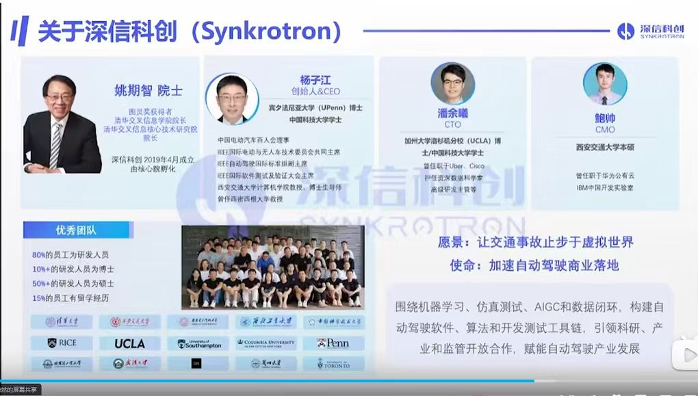
Synkrotronは、チューリング賞受賞者である姚期智 (Andrew Chi-Chih Yao) 院士によって設立され、先端技術の最前線に拠点を置いています。
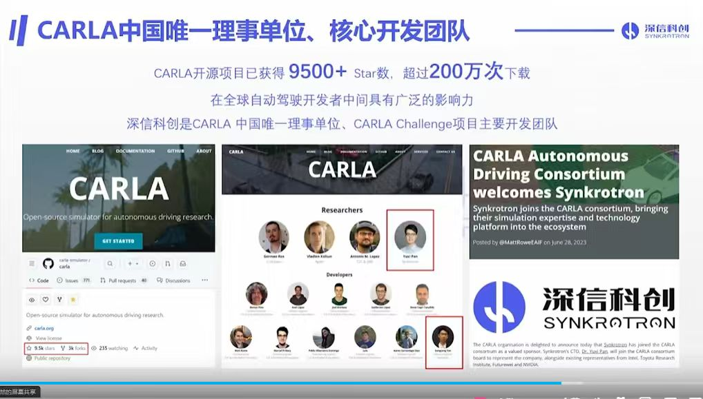
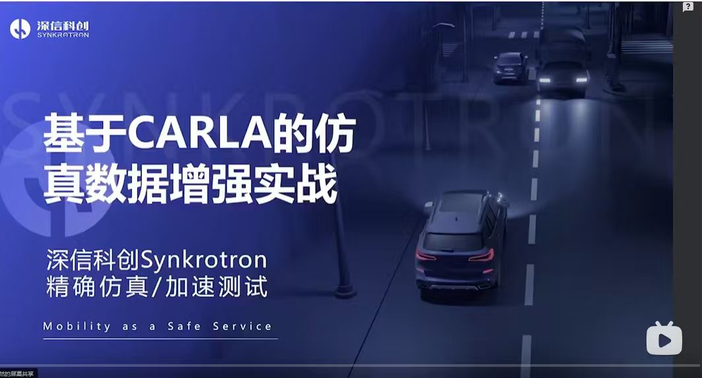
仮想環境において、認識モデルのトレーニングと検証を加速させます。
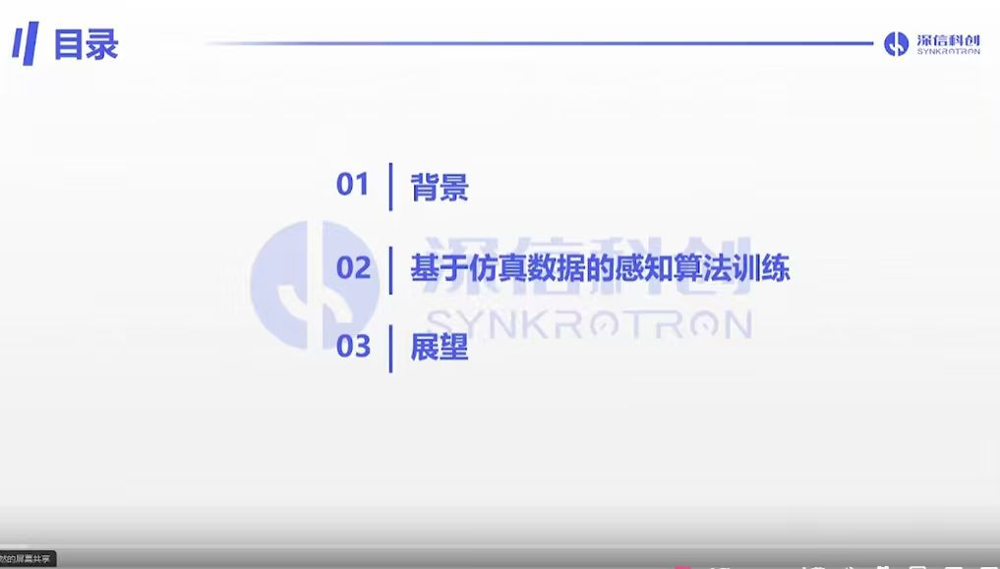
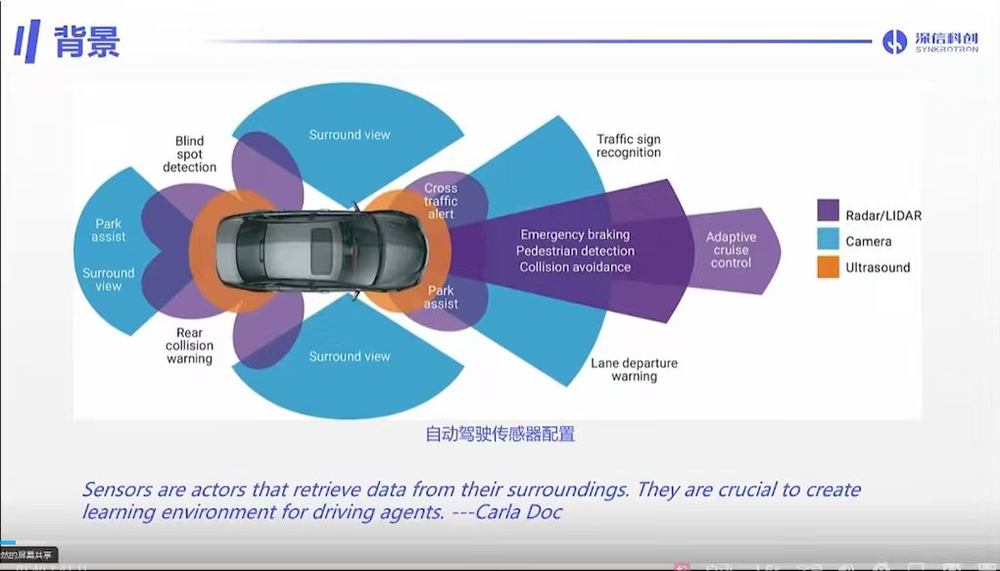
マルチセンサーフュージョンにより単一障害点を排除：Lidar/Radar、カメラ、超音波センサーによる協調カバレッジ。
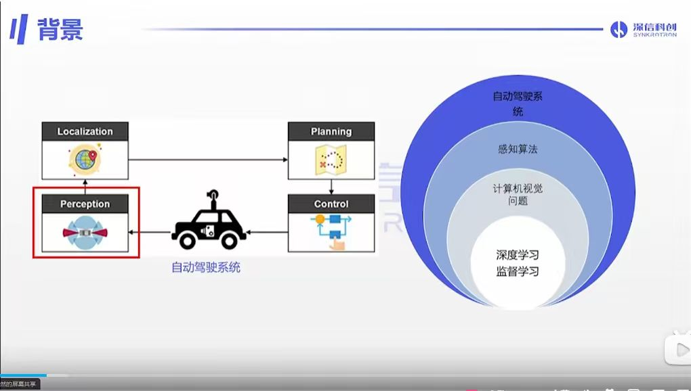
認識、測位、計画、制御の完全なクローズドループ。
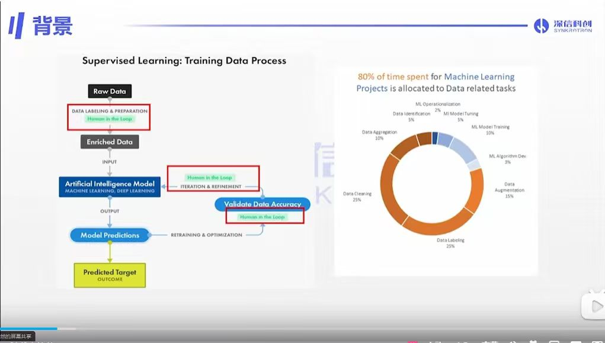
クリーニング、アノテーション、拡張作業が開発サイクルの80%を占めています。
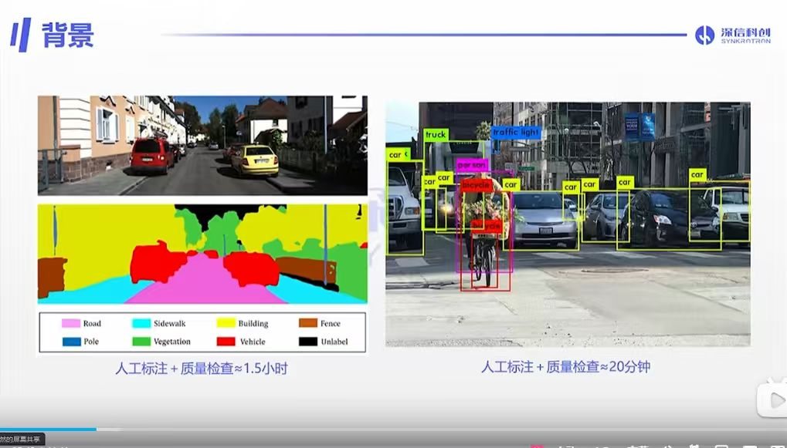
セマンティックセグメンテーション（1.5時間）は、物体検出（20分）に比べて遥かに多くの時間を要します。
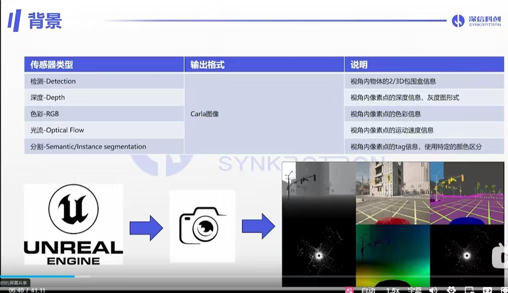
検出（Detection）、深度（Depth）、RGB、オプティカルフロー（Optical Flow）、セグメンテーション（Segmentation）等を含みます。
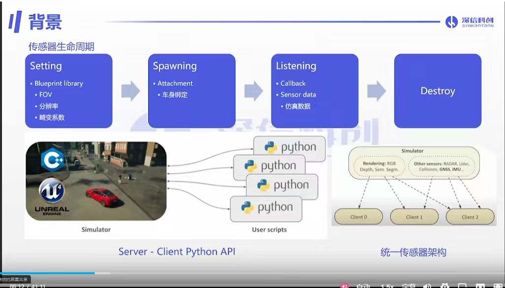
ライフサイクル：Setting → Spawning → Listening → Destroy。複数のクライアントが並行処理可能です。
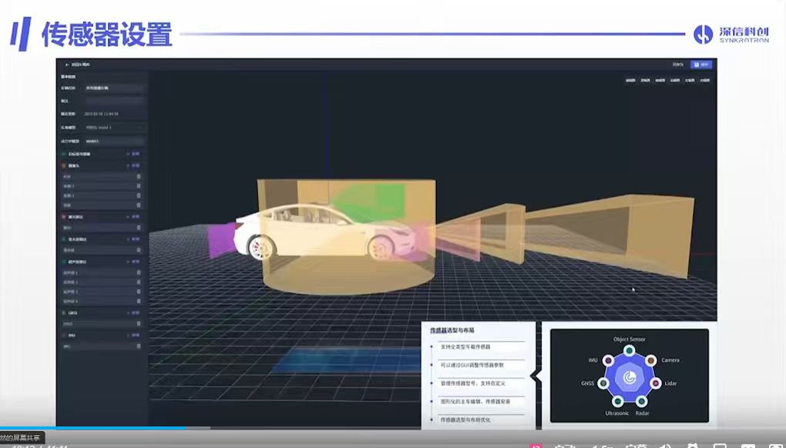
グラフィカルユーザーインターフェースにより、センサーパラメータの柔軟な調整をサポートします。
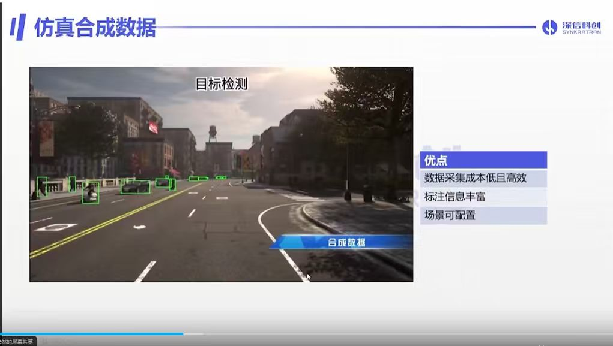
低コスト、アノテーションの自動生成、シーンのカスタマイズが可能です。
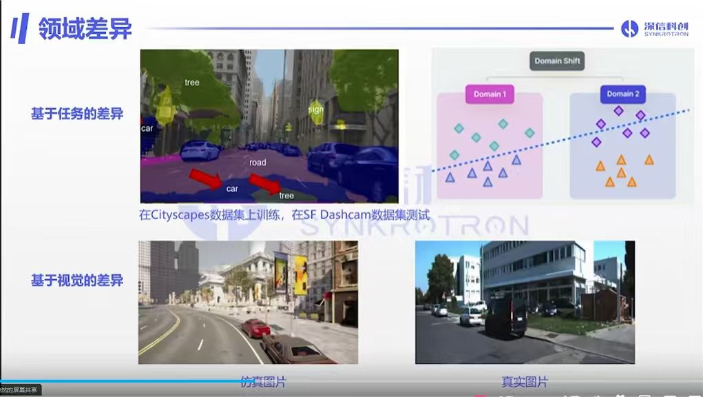
ソースドメインとターゲットドメインの間でデータ分布が一致せず、ドメイン適応が困難になります。
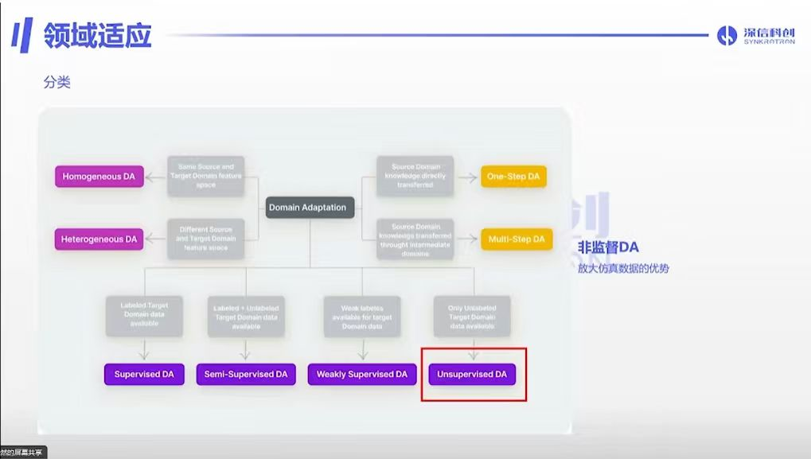
DA（ドメイン適応）技術の分類と、教師なしDAの研究方向。
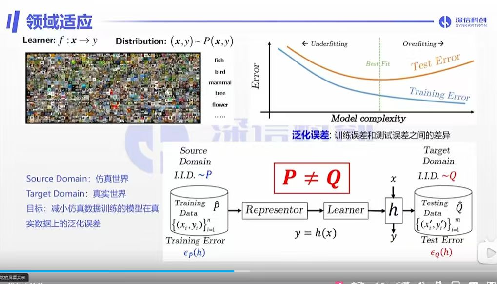
特徴表現学習と分布 P → Q のアライメント原理。
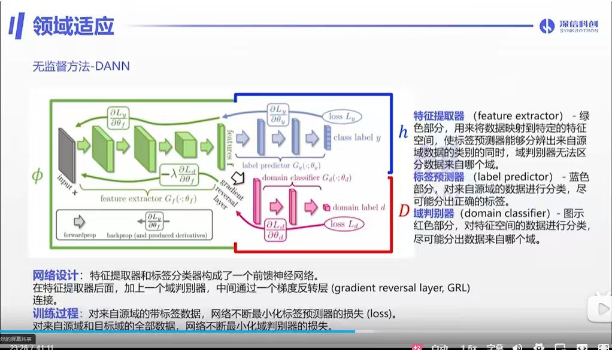
敵対的トレーニングを通じてドメイン不変特徴を学習し、Gradient Reversal Layer (GRL) を用いて特徴空間をアライメントさせます。
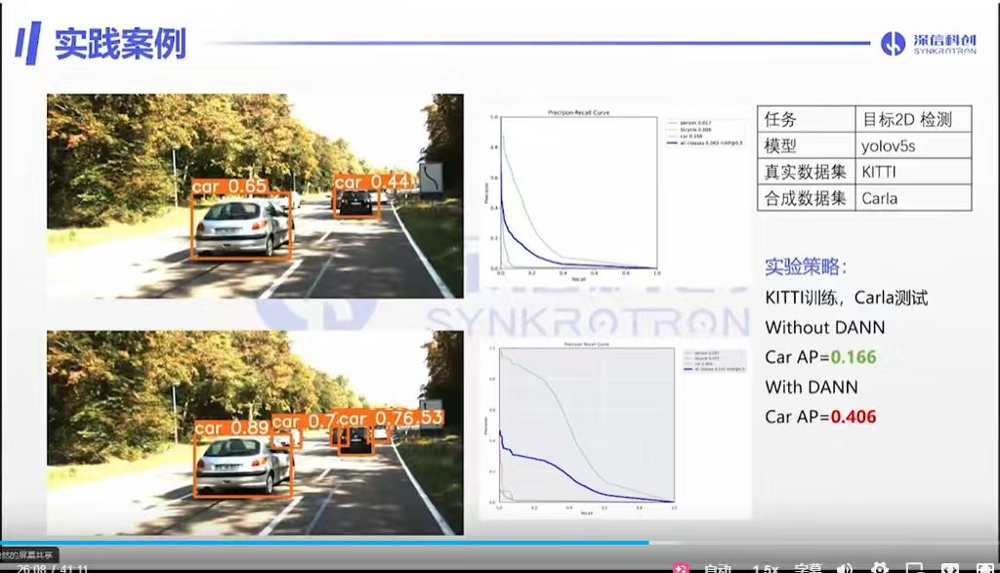
車両検出のAPが2.4倍に向上し、ドメインアライメントの産業的価値が証明されました。
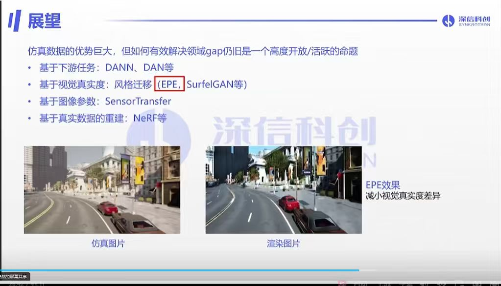
タスク適応、スタイル拡張、および NeRF による高忠実度再構築など。